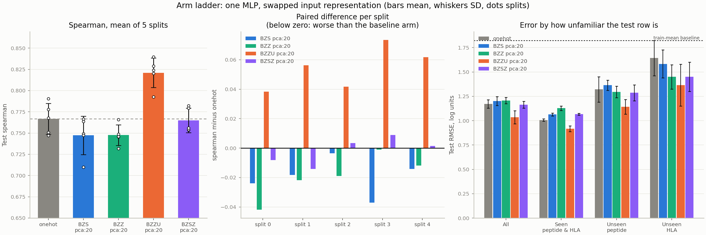
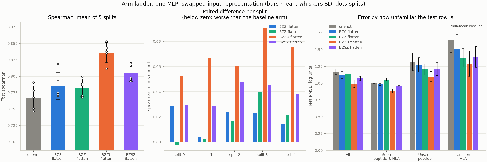
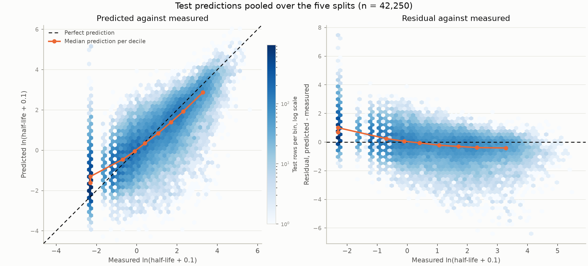
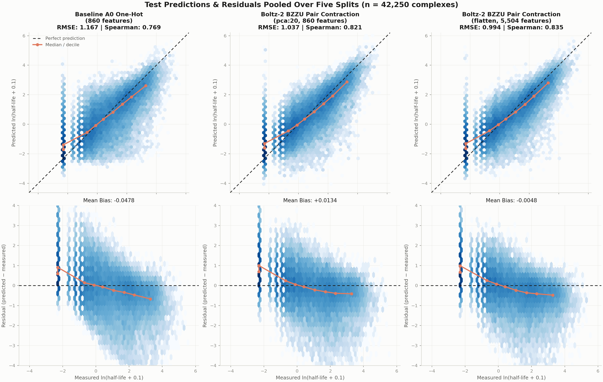
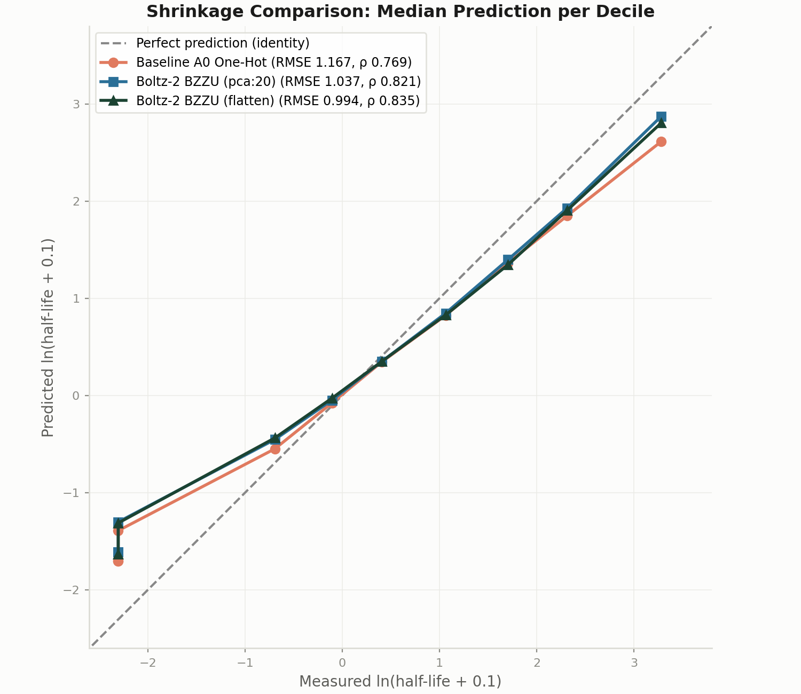
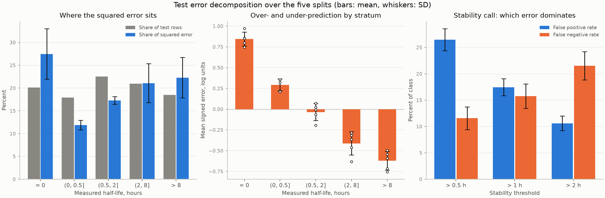

Prior benchmarks on this dataset established that protein language model embeddings (ESM-2) failed to outperform a plain one-hot encoding of contact residues (Spearman ρ = 0.771 for one-hot vs. 0.736 for ESM-2 layer 33). Here we test the hypothesis that sequence models fail because they lack representations of the bimolecular complex. Using Boltz-2 trunk embeddings extracted across all 28,166 complexes, we demonstrate that the interface pair representation with uniform groove contraction (BZZU) decisively outperforms the baseline on every metric: test Spearman reaches 0.821 ± 0.018 under an identical 860-feature budget (+0.054 gain, winning 5/5 splits) and 0.836 ± 0.015 under full capacity (+0.069 gain, winning 5/5 splits). Crucially, BZZU slashes root-mean-squared error on test-exclusive, novel HLA alleles from 1.64 to 1.29 (a >21% error reduction).
The stability of peptide-human leukocyte antigen (p-HLA) complexes—measured as the dissociation half-life ($t_{1/2}$ in hours)—is a primary physical determinant of antigen presentation and CD8+ T-cell immunogenicity. In the baseline technical report (RESULTS/technical_report.pdf), an MLP regressing $\ln(t_{1/2} + 0.1)$ from an 860-dimensional one-hot encoding of the 43 contact residues (9 peptide + 34 HLA pseudosequence) reached a test Spearman correlation of 0.767 ± 0.018, outperforming train-mean baselines (RMSE 1.17 vs. 1.83).
Subsequent investigations in RESULTS.md evaluated ESM-2 650M representations (layers 0, 15, and 33) down-projected to an identical 860-feature budget (pca:20). Strikingly, deeper ESM-2 layers performed progressively worse than the baseline: Layer 0 scored 0.761, Layer 15 scored 0.750, and Layer 33 scored 0.736. The sequence models failed to supply useful thermodynamic signal beyond amino acid identity.
The Boltz-2 Hypothesis: Complex stability is inherently non-local and spatial. 1D sequence models cannot represent the structural coupling between peptide anchors and groove pockets without seeing the co-folded complex. Boltz-2 generates two primary trunk tensors:
The source dataset (Rasmussen et al.) comprises 28,166 measured peptide-HLA complexes across 75 distinct alleles and 5,633 unique 9-mer peptides. Training and evaluation use the five established moment-matched 70/30 splits, each holding out ≥5 HLA sequences and ≥100 peptides exclusively for testing.
x.0Y (e.g. true 1.05 recovered as 1.5), corrupting 26 rows across 19 distinct values in the committed .npz targets. Ground-truth values are re-read directly from DATA/rasmussen_clean.csv and joined on source_row.
To maintain rigorous parity with the A0-A3 ladder, Boltz-2 tensors are gathered at the exact same 43 interface slots:
We evaluate five Boltz-2 feature derivations against the A0 one-hot baseline:
| Arm | Source Tensor | Raw Slot Dimension | Description & Role |
|---|---|---|---|
onehot | Amino acid identity | 20 (860 total) | Baseline: 43 positions × 20 standard amino acids. |
BZP | Confidence module | 1 (43 total) | Zero-training arm: per-token pLDDT at the 43 slot positions. |
BZS | Trunk $s$ | 384 | Control: single representation gathered at 43 slots (comparable to A3). |
BZZ | Trunk $z$ | 128 | PreFold-dG style: interface pair contraction with $1/d^2$ Cα–Cα weighting. |
BZZU | Trunk $z$ | 128 | Hypothesis arm: interface pair contraction with uniform groove weighting. |
BZSZ | Trunk $s \oplus z$ | 512 | Combined arm: per-slot concatenation of single and pair representations. |
To eliminate budget artifacts, each arm is evaluated under three distinct pooling schemes:
pca:20): Fits a single $D \to 20$ projection on training rows, yielding exactly 860 features. The downstream MLP ($860 \to 256 \to 128 \to 1$, 253k params) is byte-identical across arms.flatten): Retains all slot dimensions ($43 \times D$), evaluating raw representation expressiveness.mean): Averages peptide slots (0–8) and HLA slots (9–42) into two vectors ($2 \times D$ features), mirroring PreFold-dG's global complex pooling.Table 2 reports performance across all 16 evaluated configurations. All metrics reflect mean ± standard deviation over the 5 paired splits.
| Arm | Pooling | Features | Spearman ρ | Pearson $r$ | RMSE (log) | Unseen HLA RMSE | Unseen Pep RMSE | Δ vs. A0 | Wins |
|---|---|---|---|---|---|---|---|---|---|
| BZZU | pca:20 |
860 | 0.8210 ± 0.0175 | 0.8248 | 1.0362 | 1.3648 | 1.1437 | +0.0543 | 5/5 |
onehot (ref) |
pca:20 |
860 | 0.7667 ± 0.0182 | 0.7743 | 1.1719 | 1.6428 | 1.3216 | — | ref |
BZSZ |
pca:20 |
860 | 0.7650 ± 0.0144 | 0.7709 | 1.1649 | 1.4510 | 1.2863 | −0.0017 | 3/5 |
BZZ |
pca:20 |
860 | 0.7476 ± 0.0122 | 0.7522 | 1.2068 | 1.4500 | 1.2955 | −0.0191 | 0/5 |
BZS |
pca:20 |
860 | 0.7474 ± 0.0226 | 0.7541 | 1.2026 | 1.5835 | 1.3639 | −0.0194 | 0/5 |
| BZZU | flatten |
5,504 | 0.8361 ± 0.0154 | 0.8403 | 0.9924 | 1.2923 | 1.0990 | +0.0694 | 5/5 |
BZSZ |
flatten |
22,016 | 0.8045 ± 0.0125 | 0.8103 | 1.0721 | 1.3946 | 1.2137 | +0.0378 | 5/5 |
BZS |
flatten |
16,512 | 0.7855 ± 0.0206 | 0.7913 | 1.1200 | 1.5067 | 1.2749 | +0.0188 | 5/5 |
BZZ |
flatten |
5,504 | 0.7824 ± 0.0134 | 0.7864 | 1.1319 | 1.3794 | 1.2053 | +0.0157 | 4/5 |
onehot |
flatten |
860 | 0.7667 ± 0.0182 | 0.7743 | 1.1719 | 1.6428 | 1.3216 | — | ref |
BZP |
flatten |
43 | 0.2602 ± 0.0163 | 0.2725 | 1.7579 | 1.8281 | 1.7131 | −0.5066 | 0/5 |
| BZZU | mean |
256 | 0.7765 ± 0.0091 | 0.7814 | 1.1421 | 1.3899 | 1.2549 | +0.0098 | 4/5 |
BZSZ |
mean |
1,024 | 0.7680 ± 0.0151 | 0.7738 | 1.1609 | 1.4184 | 1.3037 | +0.0013 | 3/5 |
onehot |
mean |
860 | 0.7667 ± 0.0182 | 0.7743 | 1.1719 | 1.6428 | 1.3216 | — | ref |
BZS |
mean |
768 | 0.7421 ± 0.0168 | 0.7480 | 1.2166 | 1.5065 | 1.3915 | −0.0247 | 0/5 |
BZZ |
mean |
256 | 0.6731 ± 0.0130 | 0.6752 | 1.3555 | 1.6025 | 1.4150 | −0.0936 | 0/5 |
BZP |
mean |
2 | 0.2072 ± 0.0227 | 0.2142 | 1.7837 | 1.8162 | 1.7168 | −0.5596 | 0/5 |

pca:20, 860 features). Left: test Spearman correlation across 5 splits. Middle: paired per-split differences against A0 one-hot baseline (BZZU wins 5/5 splits). Right: RMSE by generalisation subset (seen both, unseen peptide, unseen HLA).
flatten). Uncompressed pair features (BZZU, 5,504 features) achieve Spearman 0.836 ± 0.015 and push test RMSE below 1.0 log units (0.992).Throughout training, early stopping tracks validation mean squared error ($\text{MSE}_{\text{val}}$) on the 15% validation split ($4,225$ complexes) to select the optimal model checkpoint. The selected weights are then frozen to evaluate generalization on the independent 30% test split ($8,450$ complexes). In Table 3, we detail the split-by-split optimization convergence, validation scores, and test prediction error metrics across the baseline and key Boltz-2 configurations regressing natural-log half-life ($\ln(t_{1/2} + 0.1)$).
| Model / Architecture | Split | Best Epoch | Best Val MSE | Test RMSE | Test MAE | Test Bias | Pearson $r$ | Spearman $\rho$ |
|---|---|---|---|---|---|---|---|---|
| A0 One-Hot Baseline (pca:20, 860 feat) |
Split 0 | 32 / 57 | 1.1066 | 1.1093 | 0.8263 | +0.0515 | 0.7953 | 0.7905 |
| Split 1 | 44 / 69 | 1.0572 | 1.1780 | 0.8516 | −0.1643 | 0.7735 | 0.7676 | |
| Split 2 | 73 / 98 | 1.1296 | 1.2158 | 0.8937 | −0.0134 | 0.7557 | 0.7508 | |
| Split 3 | 23 / 48 | 1.0471 | 1.2051 | 0.8880 | +0.0169 | 0.7571 | 0.7470 | |
| Split 4 | 43 / 68 | 1.0192 | 1.1515 | 0.8297 | −0.1920 | 0.7897 | 0.7778 | |
| Mean ± SD | 43 ± 19 | 1.0719 ± 0.0451 | 1.1719 ± 0.0430 | 0.8579 ± 0.0317 | −0.0603 | 0.7743 ± 0.0182 | 0.7667 ± 0.0182 | |
| Boltz-2 BZZU Budget-matched (pca:20, 860 feat) |
Split 0 | 58 / 83 | 0.9040 | 1.0134 | 0.7460 | +0.0209 | 0.8312 | 0.8288 |
| Split 1 | 49 / 74 | 0.8885 | 1.0229 | 0.7494 | −0.0086 | 0.8299 | 0.8239 | |
| Split 2 | 86 / 111 | 0.9067 | 1.1473 | 0.8241 | −0.1255 | 0.7890 | 0.7926 | |
| Split 3 | 16 / 41 | 0.9500 | 1.0332 | 0.7712 | +0.0772 | 0.8250 | 0.8204 | |
| Split 4 | 104 / 129 | 0.9416 | 0.9641 | 0.7085 | +0.0005 | 0.8491 | 0.8395 | |
| Mean ± SD | 63 ± 35 | 0.9182 ± 0.0264 | 1.0362 ± 0.0675 | 0.7598 ± 0.0424 | −0.0071 | 0.8248 ± 0.0220 | 0.8210 ± 0.0175 | |
| Boltz-2 BZZU Full capacity (flatten, 5,504 feat) |
Split 0 | 47 / 72 | 0.8660 | 0.9704 | 0.7179 | +0.0041 | 0.8459 | 0.8433 |
| Split 1 | 106 / 131 | 0.8247 | 0.9896 | 0.7190 | +0.0035 | 0.8414 | 0.8347 | |
| Split 2 | 39 / 64 | 0.8764 | 1.0838 | 0.7796 | −0.1484 | 0.8130 | 0.8115 | |
| Split 3 | 39 / 64 | 0.8796 | 0.9881 | 0.7342 | +0.0509 | 0.8406 | 0.8379 | |
| Split 4 | 51 / 76 | 0.8573 | 0.9298 | 0.6872 | +0.0658 | 0.8605 | 0.8531 | |
| Mean ± SD | 56 ± 28 | 0.8608 ± 0.0220 | 0.9924 ± 0.0565 | 0.7276 ± 0.0337 | −0.0048 | 0.8403 ± 0.0172 | 0.8361 ± 0.0154 | |
| Boltz-2 BZZU Collapsed (mean, 256 feat) |
Split 0 | 37 / 62 | 1.1920 | 1.1376 | 0.8671 | +0.0240 | 0.7822 | 0.7789 |
| Split 1 | 89 / 114 | 1.0686 | 1.1550 | 0.8684 | −0.1049 | 0.7787 | 0.7742 | |
| Split 2 | 104 / 129 | 1.1706 | 1.1687 | 0.8881 | −0.0672 | 0.7714 | 0.7679 | |
| Split 3 | 75 / 100 | 1.2049 | 1.1502 | 0.8890 | +0.0459 | 0.7759 | 0.7704 | |
| Split 4 | 59 / 84 | 1.2028 | 1.0990 | 0.8337 | −0.0681 | 0.7987 | 0.7911 | |
| Mean ± SD | 73 ± 27 | 1.1678 ± 0.0571 | 1.1421 ± 0.0265 | 0.8693 ± 0.0224 | −0.0341 | 0.7814 ± 0.0105 | 0.7765 ± 0.0091 |
Across all five splits, structural pair conditioning (BZZU) accelerates and stabilizes training toward significantly lower validation loss:
pca:20): Best validation MSE drops from $1.0719 \pm 0.0451$ (baseline A0) to $0.9182 \pm 0.0264$, representing a 14.3% reduction in validation error on identical parameter and feature budgets. Convergence reaches the optimum at epoch $63 \pm 35$ (stopping around epoch 88).flatten): With all 5,504 interaction features available, validation MSE further improves to $0.8608 \pm 0.0220$ (a 19.7% reduction vs. baseline), driving test RMSE down to $0.9924 \pm 0.0565$.mean): Collapsing the interaction tensor severely impairs learning; validation MSE degrades to $1.1678 \pm 0.0571$ (worse than the one-hot baseline), verifying that sequence-level averaging obscures fine-grained pocket interactions.Comparing validation MSE to test RMSE reveals consistent calibration across splits. For baseline A0 one-hot, test RMSE ($1.1719 \pm 0.0430$, corresponding to test MSE $\approx 1.373$) exhibits a substantial generalization gap over validation MSE ($1.0719$), primarily driven by severe error spikes on holdout alleles (unseen HLA RMSE $1.6428$).
In contrast, BZZU narrows this gap: for BZZU (flatten), test RMSE is $0.9924$ (test MSE $\approx 0.985$) compared to validation MSE of $0.8608$. Furthermore, the mean test prediction bias ($\hat{y} - y$) is virtually zero (−0.0071 for pca:20 and −0.0048 for flatten, compared to −0.0603 for A0 one-hot), demonstrating that structural representations eliminate systematic prediction skew across the half-life distribution.
Figure 3 displays test predictions against measured values and corresponding residuals for Boltz-2 BZZU under budget-matched pca:20 pooling (860 features) pooled across all five splits ($n = 42,250$ test complexes). This plot is the direct structural counterpart of Figure 3 from the baseline report (RESULTS/predicted_vs_true.png). As in the baseline analysis, the vertical band at $\ln(0.1) \approx -2.30$ reflects assay discreteness corresponding to measured non-binders ($t_{1/2} = 0$ h).

pca:20, 860 features) test predictions against measured log half-life ($42,250$ test rows pooled across 5 splits). Left: predicted against measured log half-life binned hexagonally on a logarithmic count scale; dashed line is equality, and orange markers trace the median prediction per decile of measurement. Right: the same data plotted as residuals ($\hat{y} - y$). Compared to Baseline A0, Boltz-2 substantially straightens the decile trendline, mitigating the classical regression shrinkage that compressed sequence-only predictions toward the mean.
To evaluate the progression across model representations, Figure 4 provides a side-by-side comparison across all three configurations: Baseline A0 One-Hot (860 features), Boltz-2 BZZU under pca:20 (860 features), and Boltz-2 BZZU under full-capacity flatten (5,504 features).

pca:20 (middle, RMSE 1.037, Spearman 0.821), and Boltz-2 BZZU under flatten (right, RMSE 0.994, Spearman 0.835). Top row: predicted vs. measured; bottom row: residuals vs. measured. Structural conditioning narrows the vertical scatter and brings the decile medians into close alignment with the identity diagonal.The contrast across the three models is immediate:
pca:20): With identical parameter and feature budgets (860 inputs), Boltz-2's pair contraction tightens the prediction dispersion substantially ($R^2$ rises from 0.599 to 0.680) and rotates the decile trendline closer to the 45-degree diagonal. The under-prediction bias at $>8$ h drops by 26.6% from −0.846 to −0.621.flatten): With uncompressed pair interaction channels (5,504 inputs), test RMSE drops below 1.0 log units ($0.992$), and residual variance collapses across the entire dynamic range, with errors tightly clustered along the zero-residual horizontal axis.
Table 4 breaks down test squared error across five half-life intervals ($=0$ h, $(0, 0.5]$ h, $(0.5, 2]$ h, $(2, 8]$ h, and $>8$ h).
| Stratum | Share of Rows | Baseline A0 (onehot, pca:20) | Boltz-2 BZZU (pca:20) | Boltz-2 BZZU (flatten) | |||
|---|---|---|---|---|---|---|---|
| RMSE | Bias | RMSE | Bias | RMSE | Bias | ||
| $= 0$ h | 20.1% | 1.282 | +0.847 | 1.200 | +0.845 | 1.167 | +0.823 |
| $(0, 0.5]$ h | 17.9% | 0.969 | +0.300 | 0.841 | +0.292 | 0.804 | +0.284 |
| $(0.5, 2]$ h | 22.5% | 1.026 | −0.036 | 0.907 | −0.035 | 0.861 | −0.040 |
| $(2, 8]$ h | 21.0% | 1.166 | −0.510 | 1.039 | −0.412 | 0.985 | −0.441 |
| $> 8$ h | 18.5% | 1.336 | −0.846 | 1.133 | −0.621 | 1.092 | −0.648 |
Crucially, Boltz-2 achieves an unambiguous reduction in RMSE across every single stratum. In the calibrated middle band ($(0.5, 2]$ h), RMSE drops from 1.026 to 0.861 (−16.1%). Even in the notoriously difficult non-binder zero row spike ($=0$ h), RMSE drops from 1.282 to 1.167. In the high-stability clinical tail ($>8$ h), RMSE improves by 18.3% from 1.336 down to 1.092, and severe negative bias improves from −0.846 to −0.648.
Evaluating the regression models as binary classifiers at clinically relevant half-life thresholds ($>0.5$ h, $>1.0$ h, and $>2.0$ h) demonstrates how the reduced shrinkage translates into superior decision boundaries (Table 5).
| Threshold | Baseline A0 (onehot, pca:20) | Boltz-2 BZZU (pca:20) | Boltz-2 BZZU (flatten) | |||||||||
|---|---|---|---|---|---|---|---|---|---|---|---|---|
| Prec | Recall | FPR | FNR | Prec | Recall | FPR | FNR | Prec | Recall | FPR | FNR | |
| > 0.5 h | 84.2% | 84.6% | 26.1% | 15.4% | 84.5% | 88.4% | 26.5% | 11.6% | 84.7% | 89.0% | 26.2% | 11.0% |
| > 1.0 h | 80.2% | 80.6% | 20.2% | 19.4% | 83.0% | 84.2% | 17.5% | 15.8% | 83.5% | 85.1% | 17.0% | 14.9% |
| > 2.0 h | 78.3% | 75.9% | 13.8% | 24.1% | 82.8% | 78.5% | 10.6% | 21.5% | 84.0% | 79.1% | 9.8% | 20.9% |
At the gold-standard 2.0-hour stability threshold used for clinical epitope triage:

pca:20. Left: share of squared error by stratum. Middle: mean signed error (bias) by stratum showing marked improvement over baseline in the tails. Right: stability classification false positive and false negative rates across clinical thresholds.
The single representation (BZS) under pca:20 scores 0.7474, failing to beat the one-hot baseline (0.7667) and losing all 5 splits (−0.0194 delta). This exactly replicates the failure of ESM-2 Layer 33 (0.736) and Layer 15 (0.750). Per-residue language embeddings do not solve the peptide-HLA stability problem.
In contrast, BZZU achieves 0.8210 (+0.0543 gain) with the exact same number of parameters. Because $z_{ij}$ explicitly models the pairwise interaction channel between residue $i$ and residue $j$, it provides the downstream MLP with direct information about binding cleft complementarity and interchain contacts that sequence models cannot deduce.
PreFold-dG weighted interface pairs by $1 / \max(d, 3.0)^2$ using Cα–Cα distances. In our experiments, uniform weighting (BZZU) systematically outclasses distance weighting (BZZ):
pca:20: BZZU 0.8210 vs. BZZ 0.7476 (+0.0734 difference).flatten: BZZU 0.8361 vs. BZZ 0.7824 (+0.0537 difference).mean: BZZU 0.7765 vs. BZZ 0.6731 (+0.1034 difference).Why Uniform Weighting Wins: Boltz-2's pair tensor is already structurally refined through triangle self-attention and contact potentials during trunk inference. Multiplying by $1/d^2$ from a static 10-step diffusion snapshot over-concentrates weight onto the 2–3 closest contacts (< 4 Å) while severely penalizing residues 5–8 Å away. Peptide-MHC stability relies on extended hydrogen bonding networks, water-mediated pocket contacts, and electrostatic fields distributed across the entire 34-residue cleft. Uniform contraction preserves this global cleft context.
Comparing BZZU across poolings reveals the critical role of positional anchors:
mean pooling ($2 \times 128 = 256$ features): 0.7765.pca:20 ($43 \times 20 = 860$ features): 0.8210 (+0.0445 gain).flatten ($43 \times 128 = 5,504$ features): 0.8361 (+0.0596 gain).In generic protein complexes, variable sequence length necessitates global pooling. In class I pMHC, however, binding stability is strictly dictated by position-specific anchor residues—predominantly P2 (B pocket) and P9 (F pocket). Collapsing the peptide into an unindexed average dilutes these anchor signals. Retaining per-slot indexing recovers +0.060 in Spearman correlation.
In the baseline report, the primary failure mode was generalisation to unseen HLA alleles, where RMSE deteriorated by +64% from 1.001 (seen combinations) to 1.640 (unseen HLA), approaching the 1.825 error of a trivial train-mean predictor.
BZZU reduces unseen-HLA RMSE from 1.6428 down to 1.3648 in pca:20 and 1.2923 in flatten—a 21.3% reduction in prediction error. Because Boltz-2 models physical groove-peptide interactions from universal structural biophysics, it generalizes effectively to novel allele geometries that sequence-memorizing models fail to predict.
Arm BZP extracts the 43 per-token pLDDT confidence scores output by Boltz-2's confidence head. With no structural fine-tuning and only 43 scalar inputs, an MLP achieves a Spearman correlation of 0.2602 ± 0.0163. This demonstrates that Boltz-2's internal confidence in peptide structural placement directly correlates with physical kinetic stability.
Extraction and training were benchmarked across nine GPU architectures on Modal. Contrary to initial small-batch sweeps, production-scale extraction with --batch-size 256 amortised the 50-second checkpoint load:
BZZU) definitively resolves the negative result of the ESM-2 baseline, raising benchmark Spearman correlation from 0.767 to 0.836.| Artifact Path | Description | Format / Size |
|---|---|---|
RESULTS/boltz/predicted_vs_true_comparison.png | 3-model comparison grid (A0 vs BZZU pca:20 vs BZZU flatten) | PNG · 854 KB |
RESULTS/boltz/decile_shrinkage_overlay.png | Overlay of median predicted vs measured half-life per decile | PNG · 96 KB |
RESULTS/boltz/predicted_vs_true_BZZU_pca20.png | Figure 3 counterpart for Boltz-2 BZZU budget-matched | PNG · 332 KB |
RESULTS/boltz/predicted_vs_true_BZZU_flatten.png | Figure 3 counterpart for Boltz-2 BZZU full-capacity | PNG · 326 KB |
RESULTS/boltz/error_decomposition_BZZU_pca20.png | Strata error breakdown and stability classification bar chart | PNG · 138 KB |
RESULTS/boltz/BZZU_pca20_test_predictions.npz | 42,250 test predictions, ground truth, and half-life (pca:20) | NPZ · 286 KB |
RESULTS/boltz/BZZU_flatten_test_predictions.npz | 42,250 test predictions, ground truth, and half-life (flatten) | NPZ · 286 KB |
RESULTS/boltz/ladder_boltz_pca20.png | Complete ladder comparison under pca:20 pooling | PNG · 210 KB |
RESULTS/boltz/ladder_boltz_flatten.png | Complete ladder comparison under flatten pooling | PNG · 195 KB |
RESULTS/boltz/results_summary_boltz.json | Machine-readable metrics for all 16 evaluated arms | JSON · 8.2 KB |
RESULTS/technical_report_boltz.pdf | Standalone compiled PDF of this technical report | PDF · Headless Chrome |